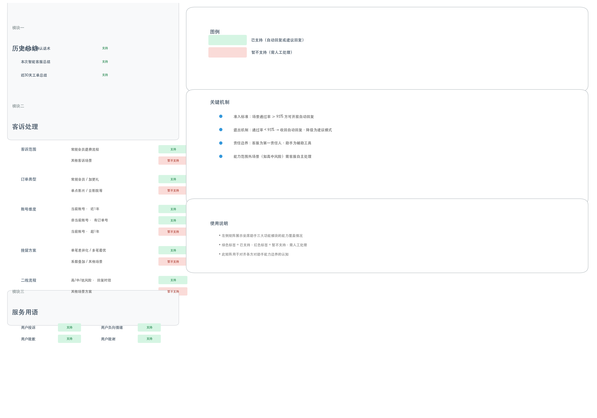
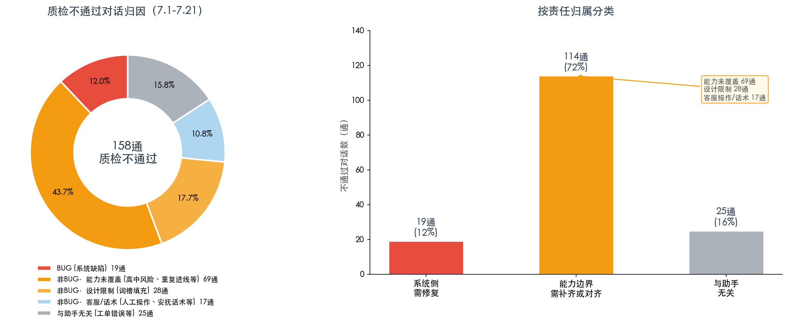

坐席助手是在线客服系统中的 AI 辅助工具。核心定位是：
帮助客服更高效地完成打字和流程操作。
助手提供两种工作模式：
| 模式 | 说明 | 适用条件 |
|---|---|---|
| 自动回复 | 助手直接向用户发送消息，无需客服点击 | 场景准确率 ≥ 95% |
| 建议回复 | 助手生成参考话术，由客服判断后自行选择发送 | 已覆盖但准确率未达自动回复标准 |
责任原则：客服是所有对话的第一责任人，助手是辅助工具。 助手自动回复时，客服仍需关注对话质量，在需要时及时介入。

坐席助手覆盖三大功能模块，从历史总结到客诉处理到服务用语。绿色为已支持，红色虚框为暂不支持、需人工处理。
覆盖退费场景的完整链路：退费意图识别 → 初次挽留 → 账号确认 → 订单确认 → 资源挽留 → 可退则退/不可退则升级。
针对「用户致歉」「用户致谢」「用户投诉」「用户负向情绪」四类场景，系统通过关键词匹配自动识别用户意图并回复对应服务用语。
每个场景的自动回复资格以对话通过率 ≥ 95% 为核心依据。不达标的场景收回自动回复，降级为建议模式；持续监控、动态调整。
| 月份 | 试点（通/天） | 非试点（通/天） | 部门均值 | 试点 vs 非试点 |
|---|---|---|---|---|
| 5月 | 141 | 100 | 109 | +41.0% |
| 6月 | 141 | 118 | 127 | +19.2% |
| 7月 | 148 | 128 | 135 | +15.6% |
试点坐席（使用助手）系统并发=3，非试点坐席（未使用助手）系统并发=2。以下为7月28日单日每2分钟采样的负荷对比。
| 指标 | 试点（并发=3） | 非试点（并发=2） |
|---|---|---|
| 平均活跃会话 | 2.1 | 1.3 |
| 平均未关闭会话 | 3.2 | 1.9 |
| 活跃达上限比例 | 49.2% | 46.1% |
| 未关闭超上限比例 | 53.6% | 38.4% |
| 阶段 | 试点满意度 | 部门满意度 | 差距 |
|---|---|---|---|
| 第一阶段（并发=2，WK14-21） | 77.0% | 85.9% | -8.9% |
| 第二阶段（并发=3，WK22-29） | 75.2% | 83.5% | -8.3% |
两个观察：
7月1日—21日，试点坐席共质检 1,314 通对话，不通过 158 通，通过率 88.0%。
| 周 | 质检量 | 不通过 | 通过率 |
|---|---|---|---|
| WK27 (7.1-7.5) | 420 | 47 | 88.8% |
| WK28 (7.6-7.12) | 449 | 38 | 91.5% |
| WK29 (7.13-7.19) | 373 | 67 | 82.0% ⚠ |
| WK30 (7.20-7.21) | 72 | 6 | 91.7% |
对全部158通质检不通过对话进行逐条分析，按原因归属分为以下三类。

158通不通过对话归因分析
| 大类 | 数量 | 占比 | 含义 |
|---|---|---|---|
| 🔴 BUG（系统缺陷） | 19 | 12.0% | 助手确有缺陷，由技术团队修复 |
| 🟡 非BUG（能力边界） | 114 | 72.2% | 助手正常运转，但因能力覆盖不全或设计限制导致不通过 |
| ⚪ 与助手无关 | 25 | 15.8% | 人工操作问题（工单勾选错误、业务流程错误等） |
| 问题类型 | 数量 | 说明 |
|---|---|---|
| 多笔订单重复探寻/流程混乱 | 10 | 既定设计不以前置节点作词槽填充 |
| 回复超时/未触发业务分析 | 4 | 部分场景助手未启动分析 |
| "投诉"关键词未触发安抚 | 2 | 用户提"投诉"时未作服务用语回复 |
| 其他执行缺陷 | 3 | 语言混乱、探寻不当等 |
| 子类 | 数量 | 说明 | 状态 |
|---|---|---|---|
| 高中风险场景未支持 | 31 | 用户提"自杀""跳楼"等，未触发特殊安抚 | ✅ 7.23上线 |
| 词槽填充设计限制 | 28 | 不以前置节点填充，重复确认信息 | ⏳ 评估中 |
| 客服自身问题 | 22 | 答非所问、回复超时、解答错误等 | — |
| 安抚话术设计 | 13 | 随机选择安抚语，与质检要求冲突 | ⏳ 待优化 |
| 重复进线场景 | 10 | 多次进线复杂场景，助手暂不支持 | ⏳ 评估中 |
| 质检规则需适配 | 3 | 助手已覆盖的功能仍按人工SOP判定 | ⏳ 待对齐 |
| 其他 | 7 | 主动服务标准、客服关闭自动回复等 | — |
工单勾选错误（20通）、业务流程错误、承诺退费未操作等。
158通不通过对话中，有 23 通（14.6%） 客服全程未干预。
| 类别 | 未干预数 | 标记为需关注 |
|---|---|---|
| BUG | 8 | 2 |
| 非BUG | 15 | 10 |
助手是辅助工具，客服需在助手运行过程中关注对话，及时介入。
| 责任方 | 负责内容 |
|---|---|
| 系统侧 | BUG修复、新能力开发、自动回复准入/退出管理 |
| 客服侧 | 对话第一责任人，关注助手回复，在需要时介入 |
| 质检侧 | 与系统侧对齐规则，AI辅助场景的判定标准适配 |
| 对话场景 | 助手行为 | 客服需做的 |
|---|---|---|
| 能力范围内 + 达标 | 自动回复 | 关注对话，需要时介入 |
| 能力范围内 + 不达标 | 已收回自动回复，仅建议 | 自行判断回复 |
| 能力范围外 | 不回复或建议 | 自主处理 |
| 助手出错（BUG） | 可能错误回复 | 及时介入并反馈 |
部分质检规则为纯人工场景设计，AI辅助下需重新定义判定标准。
| 质检规则 | 当前情况 | 建议方向 |
|---|---|---|
| 重复探寻 | 助手因词槽填充设计限制，前置节点已确认的信息仍会重复询问 | 区分设计限制导致的合理重复与能力缺陷导致的不合理重复 |
| 安抚"更换方式" | 助手随机选择安抚话术，质检要求"更换安抚方式" | 助手场景下，使用不同话术即视为有效 |
| 退费未走SOP | 助手已自动判定退费条件，人工无需重复SOP | 助手已覆盖环节，人工不判定为未走SOP |
| 优先级 | 行动 | 预期影响 |
|---|---|---|
| P0 | 修复多笔订单重复探寻/流程混乱 | 消除10通BUG |
| P0 | 高中风险场景能力上线 ✅ 已完成 | 消除31通不通过 |
| P1 | 丰富安抚话术库 | 减少安抚相关不通过 |
| P1 | 评估词槽填充优化可行性 | 潜在影响28通（影响量最大） |
| P2 | 评估重复进线场景支持 | 影响10通 |
| 行动 | 参与方 |
|---|---|
| 质检规则适配讨论 | 系统 + 质检 + 客服 |
| 自动回复准入/退出流程制度化 | 系统 + 管理 |
| 助手能力边界全员宣贯 | 系统 + 客服 |
| 维度 | 当前水平 | 判断 |
|---|---|---|
| 提效 | 试点人效 +15-41% | 效果显著且持续 |
| 质检 | 通过率 88.0% | 72%为能力边界问题，12%为系统缺陷，16%与助手无关 |
| 满意度 | 试点 76-79%，差距 7-9% | 差距存在但未扩大，近三周持续回暖 |
| 并发 | 试点49%时间满载 | 高峰压力大，需持续监控 |
坐席助手提效价值明确。服务质量提升需要三方协力：系统侧修BUG补能力、客服侧守住第一责任人底线、质检侧适配AI场景规则。
报告日期：2026年7月29日